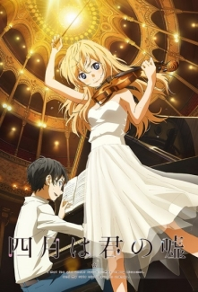
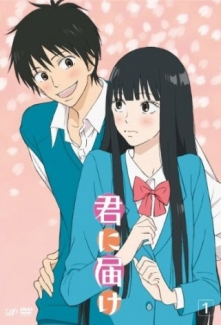
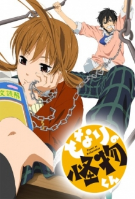

Shigatsu wa Kimi no Uso
Piano dahisi Arima Kousei, çocuk müzisyenler yarışmasını kazandıktan sonra herkes onun adını öğrenmiştir. Fakat; ona en çok destek veren annesinin ölümünden sonra zihinsel ve duygusal bir çöküş yaşayan Kousei, artık kendi piyanosunun sesini bile duyamaz olmuştur. Bu olayın üstünden iki sene geçtikten sonra bile, piyanoya dokunamayan Kousei, bütün yaşamını böyle gideceğini düşünürken tanıştığı bir kız her şeyi değiştirecektir. Başına buyruk bir kemancı olan Miyazono Kaori, Kousei’nin müzik hayatına geri dönmesine yardım eder ve onu alışık olmadığı bir stilin içine sürükleyerek yeni şeyler keşfetmesini sağlar. Hikâyemiz, ikilinin ve arkadaşlarının müzik ile yaşadıkları maceraları konu alıyor. Aynı adlı mangasından uyarlanmıştır.
Kamisama Hajimemashita

Momozono Nanami'nin babası pislik herifin tekidir ve kimsesi olmayan biricik kızını, büyük bir borcun altında bırakarak evden kaçmıştır. Aynı gün icra memurları gelir ve Nanami kendisini bir çanta dolusu eşyasıyla parkta bulur. Kalacak bir yeri veya gidecek kimsesi yoktur. Zavallı kız hayat bundan daha kötü olamaz derken bir köpek tarafından kovalanıp ağaca tünemiş bir adam görür. Ona yardım edip köpeği kovar ve adam da karşılık olarak Nanami'yi alnından öper ve ona kendi evini vereceğini söyler. Kandırılma riskini göze alarak adamın tarif ettiği yere giden Nanami kendini perili gibi görünen bir tapınakta bulur. Dahası bu tapınak sahiden de "perili"dir ve Nanami orada pek de hoş karşılanmaz.
Sukitte Ii na yo.
Lise öğrencisi bir kız olan Mei Tachibana, çocukluğunda yaşadığı bir olaydan dolayı kimseye güvenmemiş ve hiç arkadaş edinmemiştir. Bu nedenle okulda da pek sevilmez. Yamato Kurosawa ise okulun en popüler erkek öğrencisidir. Fakat bütün kızların aynı olduğunu düşündüğü için kimseye fazla yüz vermez. Yamato, okulda Mei ile karşılaşmasıyla Mei'nin farklı olduğunu düşünür ve arkadaş olmak ister. Mei ise arkadaş edinmeme konusunda ısrarcıdır. Mei, bir akşam yabancı biri tarafından takip edildiğini fark eder, fakat yardım isteyecek kimseye ulaşamaz. Son çare olarak aradığı Yamato, beklemediği kadar hızlı şekilde gelir ve Mei'yi kurtarır. Bu olay her ikisinin hayatı için de bir dönüm noktası olacaktır.
Kimi ni Todoke
Shiina Karuho'nun Bessatsu Margaret'da yayınlanmış olan shoujo mangasından uyarlanmıştır. Kuronuma Sawako mükemmel bir bayan başkarakterdir... Tabi bir korku filmi için. Kapkara saçları, uğursuz gülüşü ve sessiz yapısıyla bazen korku filmi karakteri Sadako'yla karıştırılır. Ancak onun bu korkunç dış görünüşünün altında, çok yanlış anlaşılmış bir genç kız yatmaktadır. Uyum sağlamak için çok çekingen biri olarak, tek istediği biraz arkadaş edinmektir. Ama sınıfındaki popüler bir çocukla arkadaş olunca çok daha fazlasını kazanacaktır-- kendine biraz düşman edinmek üzeredir!
Kaichou wa Maid-sama!

Seiga lisesi, tamamen erkek lisesiyken birkaç yıl önce karma bir lise haline gelmiştir. Erkeklerin çoğunlukta olması ve eski alışkanlıkları, yeni gelen kızları zor durumda bırakmaktadır. Okulun kız öğrencilerinden Misaki Ayuzawa bu durumu değiştirmek ister. Zamanla okulda sert, erkek düşmanı yapısıyla tanınan Misaki hocalarının güvenini kazanarak öğrenci konseyi başkanı seçilir. Fakat ailesinin maddi durumu kötü olan Misaki okul sonrası bir cafede part-time çalışmak zorundadır. Okuldaki şöhretini korumak için bu durumu gizlemek isterken okulun popüler öğrencilerinden Takumi Usui'nin Misaki'yi görmesiyle okuldaki şöhreti tehlikeye düşer.
Tonari no Kaibutsu-kun
Shizuku Mizutani, pek arkadaşı ve sosyal hayatı olmayan, sadece derslerini ve kariyerini düşünen, duygusuz yapıya sahip lise öğrencisi bir kızdır. Öğretmeninin isteğiyle bir gün kavga ettiği için kısa süreli uzaklaştırma cezası alan Yoshida Haru'ya ders notlarını götürür. Herkes tarafından korkunç biri olarak tanınan Yoshida, aslında arkadaş canlısı, çok zeki, fakat duygularını iyi ifade edemeyen biridir. Yoshida'nın çevresinde arkadaş gibi gözüken menfaatçi insanların olması, duygusuz biri olmasına rağmen Shizuku'yu rahatsız eder. Yoshida'nın da bu durumu fark etmesiyle artık çevresinde arkadaş olarak sadece Shizuku kalır. İkilinin bundan sonra arkadaşlıkları yavaş yavaş ilerleyecektir.